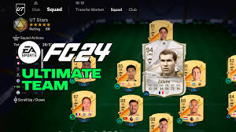
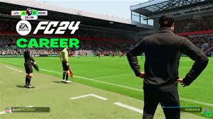
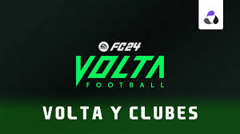

Es un videojuego de simulación de fútbol desarrollado y publicado por EA Sports.Ofrece una experiencia realista de fútbol, con modos de juego que incluyen partidos individuales, carreras como entrenador y gestión de equipos. El juego presenta una variedad de ligas, clubes y jugadores reales, así como características mejoradas en la jugabilidad y gráficos.
| Ultimate Team |  | En este modo, los jugadores pueden crear su propio equipo de fútbol personalizado utilizando cartas de jugadores obtenidas a través de paquetes de cartas virtuales o mediante la participación en desafíos y eventos en el juego. |
| Modo Carrera |  | Es un modo de juego donde los jugadores pueden tomar el control de un equipo de fútbol como entrenador o gerente y dirigirlo hacia el éxito a lo largo de múltiples temporadas. |
| Volta Football |  | Es un modo de juego introducido en la serie FIFA que se centra en el fútbol callejero y el estilo de juego urbano. Los jugadores pueden crear y personalizar sus propios personajes, y competir en partidos rápidos y emocionantes en campos callejeros |